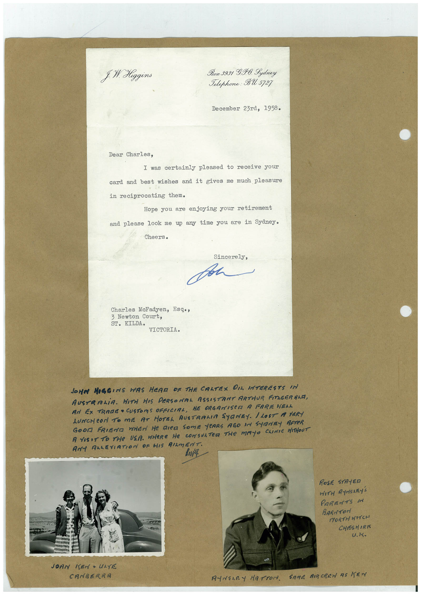

Book 1 · scan 119


Description
Transcription
Context
Review notes
Compare the machine draft with the scan. Handwriting and names need human review.
Artifacts
Edit the artifacts field in this note’s frontmatter to change these records. This summary is generated.
B01-S119-A01 — Letter, Photo & Handwritten note — Book 1, scan 119
Types: Typed document, Letter, Photo, Handwritten note
Scope: Whole scanned page; individual items can be split out during review.
Caption: Not mapped yet.
Caption source: Not recorded yet.
Caption status: unmapped
Machine transcription
f. M. Higgins Box 3931 G.P.O. Lydney Telephone: BU 5727 December 23rd, 1958. Dear Charles, I was certainly pleased to receive your card and best wishes and it gives me much pleasure in reciprocating them. Hope you are enjoying your retirement and please look me up any time you are in Sydney. Cheers. Sincerely, Charles McFadyen, Esqo, 3 Newton Court, ST. KILDA• VICTORIA. JONN MOGGINS WAS HEAR OF THE CALTEX OIL INTERESTS IN AUSTRALiA. WITH HIS PERSONAL ASSISTANT ARTHUR FITZGERALD, AN EX TRADE • CUSTOMS OFFICIAL, HE ORGANISED A FAREWELL LUNCHeON TO ME AT HOTEL AUSTRALIA SYRNEY. / LOST A VERY GOOM FRIEND WHEN HE RICE SOmE YEARS AGO IN SYRNEY AFTER A VISIT TO THE USA. WHERE HE CONSULTED THe MAYO CLINIC HITHOUT ANY AALEVIATION OF HIS RIMENT ROSE STAYED WITH ANSARY'S PARENTS IN BARITOri NORTH WITCH CHESHIRE U.K. JOAN CANBERRA ANNALRY HATTON. SAME BIRCREW AS KEN